Sistem Pengelolaan Data Posyandu

Aplikasi Pengelolaan Data Posyandu dirancang untuk membantu kader posyandu mengelola data ibu hamil dan balita secara digital. Aplikasi ini dibuat sebagai alternatif pencatatan manual agar proses pendataan menjadi lebih rapi, mudah diakses, dan efisien.
Proses pencatatan di posyandu masih banyak dilakukan menggunakan buku sehingga data mudah tercecer, membutuhkan waktu lama untuk direkap, dan menyulitkan pencarian riwayat imunisasi maupun tumbuh kembang anak. Kondisi ini membuat proses pelaporan menjadi kurang efisien.
Proyek diawali dengan memahami kebutuhan kader posyandu, kemudian menyusun user flow untuk setiap proses pendataan. Setelah itu saya membuat wireframe, mengembangkannya menjadi desain antarmuka beresolusi tinggi di Figma, dan menyusun prototype interaktif untuk memastikan alur penggunaan mudah dipahami.
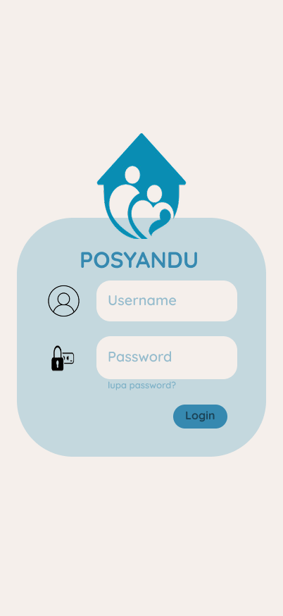
Login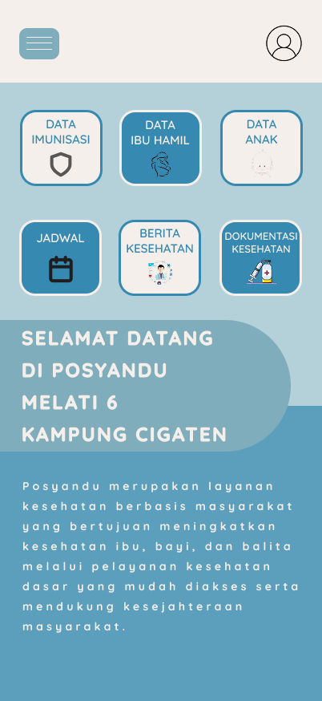
Dashboard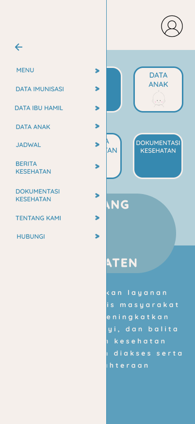
Menu Navigasi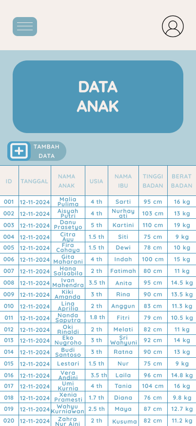
Data Anak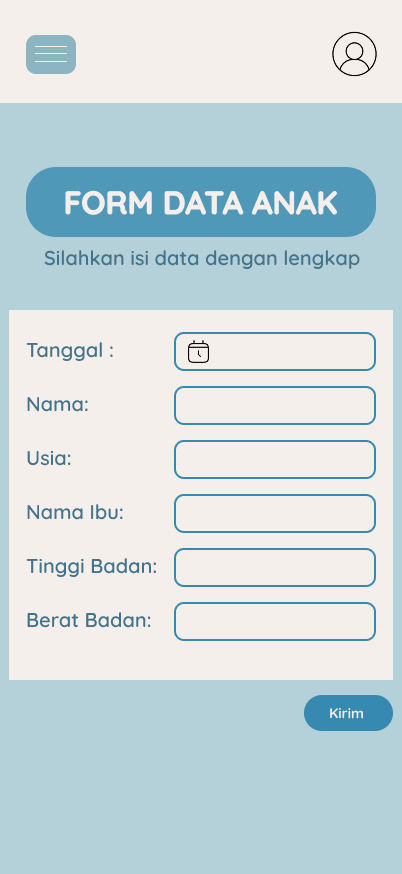
Form Data Anak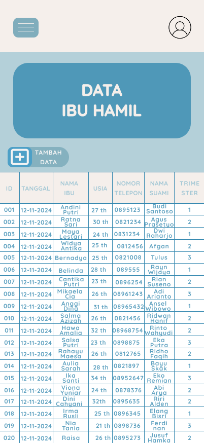
Data Ibu Hamil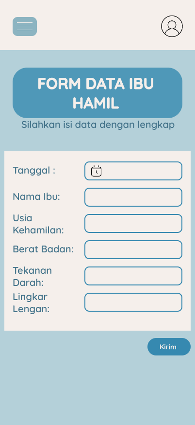
Form Data Ibu Hamil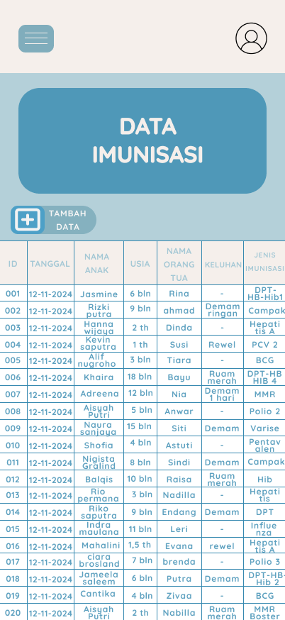
Data Imunisasi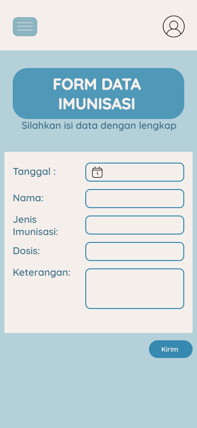
Form Data Imunisasi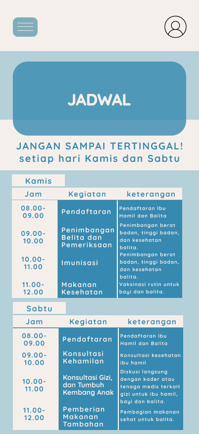
Jadwal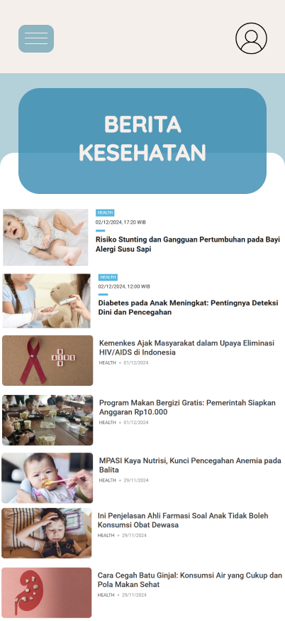
Berita Kesehatan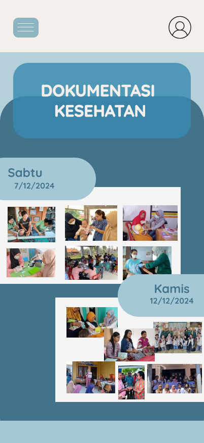
Dokumentasi Kesehatan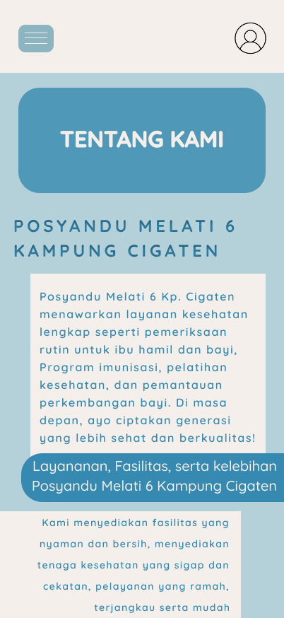
Tentang Kami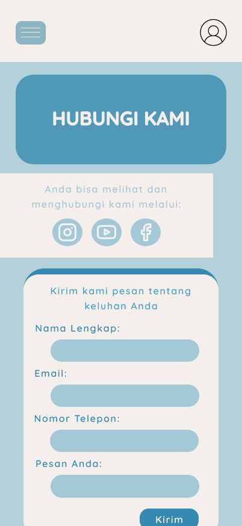
KontakHasil akhir berupa prototype interaktif berbasis web yang memiliki alur penggunaan sederhana dan tampilan yang konsisten. Desain difokuskan agar memudahkan kader posyandu dalam mengakses informasi serta mengelola data anak, ibu hamil, dan imunisasi dengan lebih efisien.